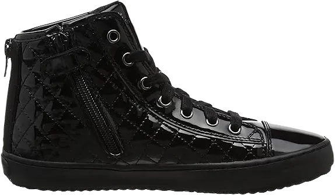
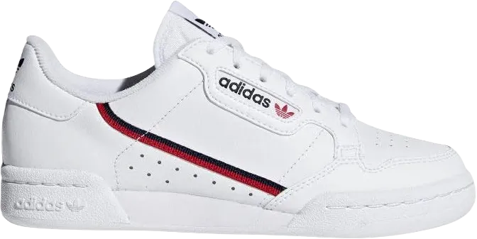

18 Best School Shoes For Kindergarten 2024
Our focus this time is on the best school shoes for kindergarten. You’ll agree that finding quality shoes for your little one isn’t as straightforward as it seems, given the multitude of kindergarten shoe manufacturers available. It might surprise you to learn that there are both high-quality and low-quality options on the market, making it challenging for parents who are unfamiliar with buying school shoes for their children.
After dedicating approximately 35 hours to this review, we can confidently say that most parents know exactly what to look for in quality school shoes for kindergarten. They prioritize features such as proper cushioning, a lightweight design, a comfortable fit, and excellent foot support, ensuring that their children's feet feel good throughout the day.
-
#1
Stride Rite SM Jamie
Step Rite SM Jamie is an outstanding shoe brand for kindergarten, making a significant impact in the market and leaving parents impressed. This brand comes from a manufacturer that has been around for quite some time, known for its commitment to quality and comfort. After speaking with John Muriatic, a lumberjack and designer, it’s clear that Stride Rite SM Jamie is one of the few options worth considering today.
The sole of this shoe is notably lightweight, ensuring that your children won’t struggle too much while moving from one place to another. This feature is particularly important for young kids who are constantly on the go, allowing them to navigate their environment with ease and confidence.
Additionally, the rounded edges of the shoes play a vital role in minimizing stumbles and falls. This design aspect not only enhances safety but also contributes to the overall comfort and stability that children need as they explore and play throughout the day. -
#2
Nike Kids Tanjun
Moloco also recommends these Nike shoes with Velcro, noting their exceptional durability. In addition to being easy to put on and take off, the Tanjuns feature a mesh upper that ensures breathability, making them a comfortable choice for active kids.
We loved these shoes and went through multiple pairs in various sizes. They adapt well to growing feet, providing consistent support and comfort as kids change sizes.
These shoes are available in toddler and big kid sizes; however, they do not come with the Velcro closure. This makes them suitable for older children who may prefer a more traditional lace-up style while still benefiting from the Tanjuns' overall design and comfort. -
#3
GEOX Kalispera 19
Another great pair of tennis shoes for young walkers comes highly recommended by Peggy Economou, founder of maternity brand Teat and Cosset. She emphasizes the importance of prioritizing quality over style for children's shoes, especially to prevent foot pain, and this pair checks both boxes.
Economou loves these shoes for their exceptional quality and ergonomic design. They come with a breathable leather insole, ensuring comfort for growing feet. The shoes are crafted to provide strong support, making them ideal for active kids.
These stylish shoes feature a stitched, patent-leather-like exterior and a convenient side zipper. This design not only enhances their look but also makes it easy for kids to put them on and take them off, adding both functionality and charm. -
#4
Nike Huarache Extreme Sneaker
Like infants, young children also benefit from shoes that are easy to put on, as May emphasizes. Tennis shoes should be simple to take on and off, and closures like stretch fabric and Velcro make this process easy for kids, helping them gain independence.
She recommends these slip-on shoes from Nike, featuring two elastic straps that keep the shoe securely in place. Doyle agrees, noting that parents should always choose a shoe that fits snugly and provides security for the child's foot, preventing any slipping or discomfort.
The children’s model mirrors the adult version, which is popular as a women’s athletic shoe. Both versions come in a wide range of fun colorways, making them a stylish and functional choice for active kids. -
#5
Kai Run Robyne
Are you searching for quality shoes for your children and wondering which brand or type to choose for your energetic kindergarten kids? Look no further, as this is the perfect shoe brand you should consider this time around. It not only offers comfort and durability but is also designed specifically with active children in mind.
One of the standout features of these shoes is their quick-drying performance. After cleaning, they take relatively little time to dry, making them a practical choice for parents. Whether your child is running around at school or getting their shoes dirty, these shoes are easy to maintain and keep in good shape.
The soft, functional sole ensures your child can wear these shoes for an extended period without discomfort or wearing them out quickly. Kids love lightweight shoes, and the See Kai Run Robyn is the ultimate choice for kindergarten school shoes, offering the perfect balance of style and functionality. -
#6
Vans Kids Classic Slip-On
Maisonette co-founder Sylvana Ward-Durrett highly recommends Vans slip-ons for their simplicity and ease of use. As their name suggests, they are incredibly easy for kids to slip on and off, making them an ideal choice for busy mornings or quick outings.
Ward-Durrett also points out that Vans offer great value for their price, perfectly balancing affordability with the wear-and-tear they endure throughout the week. Whether for playground adventures or casual school days, these shoes hold up well, offering both style and practicality.
Another bonus is that Vans slip-ons are available in all sizes, allowing parents and children to match if they want to twin. This makes them not only a functional option for kids but also a fun and stylish choice for the whole family. -
#7
Adidas Kids Stan Smith
Oakes and Eunice Byun, CEO and co-founder of the kitchenware company Material, are strong advocates of Stan Smiths for their children, especially the versions with velcro. They appreciate how easy it makes things for kids, allowing them to master putting on and taking off shoes without the hassle of dealing with laces.
Oakes agrees that no-tie shoes are the way to go, noting that velcro fastenings offer a practical solution for parents who want to avoid the constant task of tying laces. It's a small but important convenience for busy families.
For older children, Stan Smiths also come in versions with traditional laces, which might be more suitable as they grow. This versatility makes Stan Smiths a popular choice for kids of all ages, offering both ease and style. -
#8
Panther Kids Uprise Knit
Fauci highlights Puma weave shoes as a top choice for older kids, particularly for those who are drawn to the trendy, sock-like fit. The snug, pull-on style offers a modern look that’s gaining popularity among children as they grow older.
The fitted design requires a bit more dexterity than younger kids usually possess, making these shoes a better option for kids aged 8 and above. The shoes' construction is perfect for kids who are starting to manage more independent tasks.
With their sleek, slip-on design, Puma weave shoes offer both fashion and function, making them a go-to choice for older kids who want comfort and a stylish appearance. -
#9
Cienta Distressed Canvas
Both KaMiaos and Cienta Distressed shoes draw comparisons to the classic French Bensimons, resembling those simple, Converse-like styles. PR professional Meredith Winfrey highly recommends the KaMiaos for their affordability and ease. Her 2-year-old has worn several pairs since he began walking, and they have proven to be both convenient and durable.
Winfrey praises the KaMiaos for their versatility, noting that they slip on and off effortlessly, are great without socks in the summer, and still look cute with socks in colder weather. Even after going through the washing machine, these shoes come out looking fresh and ready to go. Available in a variety of fun colors and patterns, they are an easy go-to for young children.
Similarly, Ashley Melone, co-founder of Madri Collection, recommends the Cienta Distressed Canvas Slip-Ons for her daughter. Melone loves the timeless look of these shoes, which match just about any outfit, and appreciates the convenience of slip-on shoes that her toddler can wear comfortably without socks, making it much easier to get out the door. -
#10
Super Mario Brothers
To elevate your baby’s shoe style, consider the Mario Brothers shoes, whether your child has wide or slender feet. These shoes feature a flat rubber sole, offering excellent grip and traction for toddlers. The cushioned collar enhances comfort and stability, ensuring that your child’s feet are well-supported during playtime. These shoes come highly recommended by podiatrists for toddlers due to their arch support, making them an excellent choice for growing feet.
The wide toe box design provides ample room for your toddler’s toes to relax, which is especially important for toddlers whose feet may still be developing strength. Shoes that offer proper arch support, like these, are crucial for promoting healthy foot development. Additionally, the vibrant and playful design of the Mario Brothers shoes is sure to keep your toddler's mood cheerful, adding a fun element to their daily activities.
These shoes feature dual-density materials used in the midsoles, ensuring that your toddler’s feet are protected from shock or impact. The rubber sole provides a slip-resistant lift, perfect for new walkers or more experienced toddlers. Slip-on straps enhance the secure fit, making these shoes easy to put on and take off while ensuring your toddler’s feet remain safe and comfortable. -
#11
See Kai Run Kids’ Ginny Mary Jane Flat
When it comes to choosing children’s shoes, the See Kai Run Kids’ Ginny Mary Jane Flat stands out as a top brand. This shoe offers comfort and a lightweight feel, making it perfect for kindergarteners. The materials used in crafting this shoe ensure durability and long-lasting wear, especially since it's made from 100% leather. Parents can rest assured that this shoe will remain sturdy and reliable, even after regular cleaning and usage.
The sole of this shoe is crafted from rubber, allowing children to move freely and comfortably from one place to another. Whether playing games or just walking around, this shoe provides excellent support. The rubber sole enhances flexibility and grip, ensuring your child's feet are safe and stable, even during active play. This design feature makes it one of the best choices for growing feet in kindergarten.
One of the standout features of the Ginny Mary Jane Flat is its ease of use. The shoe is simple to put on and take off, a convenience both kids and parents will appreciate. This user-friendly aspect, combined with the overall comfort and support, is why this shoe made it onto our list today. It’s a perfect combination of style, practicality, and durability for young children. -
#12
Feetmat Waterproof Kids Sneaker
According to the American Academy of Pediatrics shoe recommendations, the Feetmat Waterproof Kids Sneaker tops the list of podiatrist-recommended shoes for toddlers in Australia. This sneaker is known for its well-padded collar, offering excellent traction and stability, making it an ideal choice for young walkers. The shoe provides great comfort and support, keeping little feet secure during various activities.
The sole of the Feetmat sneaker is crafted from flexible rubber, combined with a synthetic waterproof lining. This feature ensures that the shoe can withstand outdoor adventures, protecting your child’s feet from water, rocks, or stones. Additionally, the shoe includes advanced technology in the form of an Anti-Crash Toe Cap, offering 100% protection against impacts, ensuring your toddler’s feet stay safe during play.
Whether your toddler is a beginner walker or simply in need of comfortable footwear, the Feetmat Waterproof Sneaker is a perfect choice. The rubber sole design enhances stability, reducing the chances of falls or stumbles. This durable, flexible shoe was recommended by podiatrists for its superior protection, traction, and overall support for growing feet. -
#13
See Kai Run Kids Robyne
According to Fauci, canvas shoes from the Seattle-based brand See Kai Run remain a popular choice year after year. These shoes feature a practical soft sole, making them a comfortable option for little ones. The designs are stylish yet functional, perfect for early walkers.
The color options are more subdued, providing a nice aesthetic for children's footwear. This brand is particularly noted for its slightly wider cut, which accommodates various foot shapes. Many children tend to have wide feet, and these roomier designs ensure a comfortable fit for their growing feet.
Overall, See Kai Run shoes are ideal for toddlers taking their first steps. With their combination of comfort, style, and ample space, they make an excellent choice for parents looking to support their child's early walking experience. -
#14
Sawyer Iii Chukka Boot
The Sawyer III Chukka Boot is another excellent choice for kindergarten school shoes, allowing your child to look stylish and stand out while socializing with peers. This shoe design has been praised for its positive impact on how children walk and interact with their friends.
Crafted from leather and synthetic materials, the Sawyer III enhances overall performance and durability, meaning you won’t have to replace your child’s shoes frequently. The combination of these materials contributes to the shoe's quality and longevity.
Featuring a lightweight rubber sole, this shoe is designed for comfort and ease of movement. Additionally, the hook-and-loop strap ensures a secure fit, preventing any slipping or discomfort as your child plays and explores. -
#15
Sawyer II Boot
The Sawyer II Boot gives children a stylish appearance, which is one reason why we chose to feature it in our recommendations. When considering this boot, it's essential to look at its overall performance and durability, which are impressive and may surprise you.
Designed for stability, this shoe is made to withstand various activities, including on-road and off-road adventures. Cleaning the boot is also a breeze, as it dries quickly, making it practical for active kindergarten kids.
Constructed from leather and synthetic materials, this shoe is lightweight, ensuring comfort for your little ones. Additionally, its quick-drying feature after cleaning adds to its convenience, making it an excellent choice for busy parents and active children. -
#16
Old Soles Pave Cheer
At Runnin’ Wild, a children’s shoe store in Brooklyn, the Old Soles high-top tennis shoes are a favorite among little ones, as noted by storekeeper Stacey Fauci. These shoes feature soft leather and stylish designs, making them both functional and fashionable.
The Velcro closure and rubber sole ensure they are easy to put on and allow for comfortable movement. This practical design is perfect for active kids who are always on the go.
Mika Oakes, the founder of the maternity swim brand Moloco, also recommends Old Soles shoes for new walkers. She particularly loves a sparkly, shiny pair, emphasizing their appeal to both parents and children alike. -
#17
New Balance Kids’ Fast V1 Fresh Foam
After a thorough investigation, the V1 Fresh Foam from New Balance emerged as a top choice among toddlers' shoes, receiving more positive reviews compared to other Podiatrist Recommended options. With its flexible sole design, your little one will have the freedom to walk, jump, or even kneel with ease.
The innovative foam insole design ensures that these Podiatrist Recommended shoes provide a smooth ride for your child, whether they’re navigating slippery or muddy paths. The use of carbon rubber sole material contributes to its excellent traction and durability.
Made from 100% synthetic material, these shoes keep your child's feet dry in wet conditions. Additionally, the synthetic upper makes cleaning these shoes a breeze, and this lightweight material is one reason the V1 Fresh Foam is so popular. The rubber outsole enhances foot stability and grip, making it a reliable choice for active toddlers. -
#17
Reebok Classic Leather
I absolutely love Reebok Classics for my preschooler, as noted by Danielle Walish, co-founder of Madri. For spring, I ordered her a pair of Classic Leathers in white, and for fall, we switched to black with gum bottoms.
Danielle mentions that the retro aesthetic is especially adorable on tiny feet. Just like Nike, Reebok also offers this style for older children and adults.
These shoes combine style and comfort, making them a perfect choice for little ones who want to look fashionable while being active.